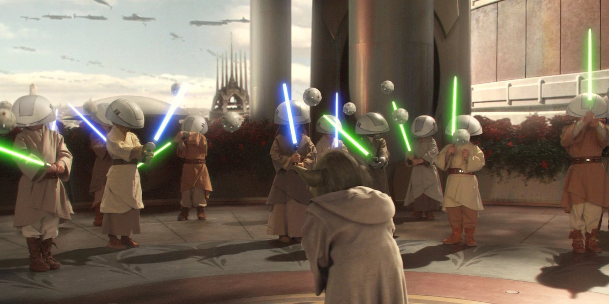

Youngling
Master Yoda himself trains the young Jedi- who have been identified as Force-sensetive shortly after birth. They must give up normal life with their parents and must sever all emotional attatchments.
The Jedi Order is a powerful group of Force users drawn from all over the galaxy who have pledged themselves to the pursuit of peace, knowledge and harmony with other beings. They served as the Republic's protectors and peacekeepers for thousands of years. The Jedi Order numbered 10,000 Knights and Masters at the start of the Clone Wars, but the Empire and Darth Vader hunted the Jedi down, killing practically all of them but 2 remained: Obi-Wan Kenobi and Yoda.
Lightsabers are made up of a hilt and a plasma blade. A power cell in the hilt heats up plasma gas and focuses energy through the kyber crystal, creating the blade. Lightsaber colors are determined by the color of the kyber crystal that focuses the energy beam. The Sith corrupt their kyber crystals, resulting in a crimson sheen. They look pretty menacing!
Luke Skywalker's second lightsaber